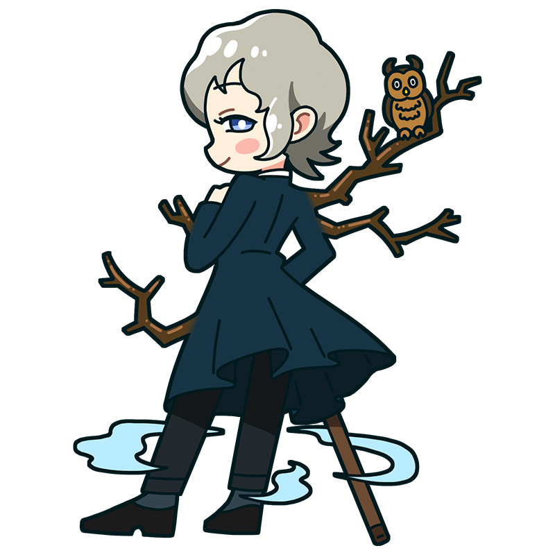

旅ってのはいいものさ。
自分が自由だと思い出せるからね。
フリードリヒ
気高く研ぎ澄まされた魂は
後ろ姿にあらわれる
ドイツのロマン主義のミューズ。雄大な自然を旅しながら風景画を描く、旅好きのロマンチスト。ひとつの場所に留まらず各地で空を眺めては思索に浸っている。体から伸びる樫の枝は定期的に切りそろえている。
様式
ロマン主義
出身国
スウェーデン
代表作
- 『雲海の上の旅人』
- 『樫の森の修道院』
- 『氷の海』など
フリードリヒといえばこの一枚！
雲海の上の旅人
山頂の岩の上に立つ男が、眼下に広がる雲海を静かに見つめている。険しい道を歩んできたであろうその背中には、力強さと同時に孤独や哀愁が漂い、思わず画家自身の人生を重ねてしまう。雄大な自然の中で思索にふける姿は、まさにロマン主義を象徴する題材である。なお、日本では『雲海の上の旅人』と訳されることが多いが、原題は「放浪者」「さすらい人」といった意味を含んでいる。
制作年
1818年
技法・材質
油彩、キャンバス
寸法
98.4 cm x 74.8 cm
所蔵
ハンブルク美術館
(ドイツ)
作品画像出典: https://commons.wikimedia.org/wiki/File:Caspar_David_Friedrich_-_Wanderer_above_the_sea_of_fog.jpg
フリードリヒってどんな芸術家？
カスパー・ダーヴィト・フリードリヒ
ドイツ・ロマン主義を代表する画家。当時はスウェーデン領だったグライフスヴァルトに生まれたが、現在ではドイツの画家として語られることがほとんどである。霧に包まれた山々や荒涼とした海辺など、静寂と哀愁に満ちた風景画で人気を博した。幼い頃には、自分を助けようとした弟を事故で亡くすという悲しい出来事を経験し、その記憶は生涯影を落とし続けた。晩年は人気が衰えたものの20世紀に再評価され、今ではドイツ・ロマン主義を象徴する巨匠として高く評価されている。
フルネーム
Caspar David Friedrich
誕生
1774年9月5日
死没
1840年5月7日(65歳没)